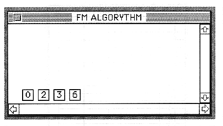

Displays the FM connection of the currently selected tone.
To use a layer as FM, the following settings are required.
The modulator and carrier are set to the same START and END.
Attach a career check button to the carrier.
Set FM connection information in the Slot window.
After making the above settings, if you open the FM connection window or update the FM connection window using the FM menu, the FM algorithm will be displayed in the FM connection window. The number at this time is the number of each layer in the Layer window.